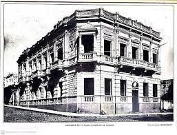

Historical aspects
Colonel of the Brazilian Pacific Army De Vargas, who arrived in Paraguay with the occupation troops in 1869, at the end of the War against the Triple Alliance, decided to stay and live in the city of Asunción. For his residence on the streets "Del Sol" (today Presidente Franco Street) and "Convención" (Today: Juan E. O'Leary Street) in the La Encarnación neighborhood, he entrusted the Builder Engineer Karl Gustaff Rehnfeldt, at the end of the 19th century, with the project and construction of his residence approximately in the year 1888 (the exact year is not known). This mansion was initially designed and built for housing, with the typology of the time. Later, Mr. Juan Silvano Godoi used it, first as a home, but, as he had a wealth of books and works of art, he used it as a Library and Museum, and it became known as the "Godoy Library and Museum".
Over the years, the building changed its name and uses: 1) Juan Silvano Godoi Museum of Fine Arts and American Library; 2) Library, Museum and National Archives (year 1903, Government of Juan A. Escurra, being General Director Mr. Juan Silvano Godoy); 3) Library and Archives of the Nation; 4) Godoi Library and Museum; 5) National Museum and Art, Juan Silvano Godoi American Library; 6) Godoi Museum; 7) COPACAR (Paraguayan Meat Corporation), 8) National Foreign Ministry, Offices. 9) Vice Presidency of the Republic-Offices (A new building was built on the Mansion).
The first renovations were carried out by a French team, who brought with them a series of changes, plausible for some, harshly criticized by others. In the newspaper "Correo Semanal" in an interview with Dr. Alberto Nogues, who was interim Minister of Foreign Affairs, then head of the same, from March 9, 1976 to August 15, 1983 (he died in 2001) explained the following:
"When COPACAR was going to leave the old building, authorization was obtained from the Ministry of Finance to carry out some reforms in said building: 1) the back part was demolished and the idea was to erect a building with three floors or levels, to archive of the Ministry; 2) Arrange the rest of the building in order to put it in good condition and convert it into the minister's office. Many ideas could not be specified due to lack of money, they had the collaboration of Engineer Celso Velázquez, who advised him on issues of foundations, etc. Also in the interview granted, he said that he had the participation of Paraguayan professionals who interpreted the original plans made by French professionals". He also reminded the moldurists Germán Gómez and Favio García, Ángel Arce who was in charge of the capitals, Contratista Silvio González" The work required several years of effort and dedication. The acoustic stained glass windows were brought from Belgium, the marble from Brazil, the floor The parquet was made by the parquet specialist Mr. Teodoro Thielmann.
The residence or mansion consists of two floors, has balconies on the ground floor and upper floor, which, together with other residences of the time, constitute links between the outside and inside world of a residence, replacing the colonial galleries. The balconies were typical of the technology of the early twentieth century. The rise of balconies corresponds to the post-1870 War era, when urban mansion-type buildings emerged that involved the construction of two (2) floors or levels. The corner balconies in neoclassical style, with covers and pilasters, supports of decorated corbels that support the masonry vault.
Thus, it can be seen that over the years, the building changed its uses and owners. Today the offices of the Vice Presidency of the Republic of Paraguay operate.
Formal Description: From the point of view of applied technology, it is observed: The building corresponds to constructions with construction typologies typical of the 19th century and early 20th century, in which the classicist and eclectic styles that are observed in the the main facades of the buildings respecting the Base, Body and Crown canons. Baroque and Art Nouveau also appear as decoration on the main facades. This is accentuated in public and private buildings.
At this time, the custom of building two-story buildings like urban mansions became widespread. The original elements are respected and preserved as far as possible in the renovations carried out in this building.
Typology: Eclectic
Description: The three-level building (ground floor, upper floor and terrace), is located on a piece of land, on the corner, with boundaries, and raised with respect to the street, built on the municipal limit or sidewalk. Subsequently, this magnificent building has been restored inside and outside by professionals: architects and engineers, with training in building restoration, since, from the third level or terrace, a modern building was built.
For the execution of the building or palace, materials from our country and imported materials were used. Thus, we have: stones for foundations brought from quarries located in the interior and near the capital, ceramic bricks from the interior of the country, for plastered masonry of 0.45m, 0.30m, 0.15m. and style columns, interior and exterior walls. The walls of the main façade have a rusticated plaster. The openings, made of board-type wood (doors and windows) have imported stained glass windows, they are made of wood carved by local artisans, calcareous and granite floors inside and internal galleries; and marble floors in the main stairway and interior access. The staircase that is in the main hall has wrought iron railings and turned with beautiful designs. On the main façade, it presents a corner typology with the octagonal treatment where the canopy balcony stands out on the upper floor in an Italianate style with covers and pilasters, decorated corbel supports that support the masonry vault. Decorations are also observed on the balconies and on the openings, very typical of the technology of the early twentieth century. On the ground floor: The main entrance has an important board-type wooden door with (2) leaves, a marble staircase, and another carved wooden door, with frosted glass details that opens to a large distribution hall and an important marble staircase with railings, leading to the upper levels. In this hall style and ceiling with linear moldings are observed and on the electrical devices (hanging chandeliers) Straight balconies are observed in the main and lateral facade. On the upper floor, the other balconies are cantilevered, have masonry balustrades and decorated corbel supports that support the masonry vault, in addition, attached and molded pilasters, hierarchizing the openings made up of wooden and glazed windows. There are also some straight balconies with masonry balustrades.
Linear decoration and other details can be seen on the cornice. On Juan E. O'Leary street there is a secondary entrance, with a panel-type wooden door, it has the third level or ceiling made up of a Catalan vault and a wall with linear details and details of ciboria on straight pilasters.
Rating Degree (According to Municipal Ordinance JM 35/96)
Grade Architectural Value:
Comments:
The degree of valuation is consigned by the Historical Center Office of the Municipality of Asuncion. It is part of the National Heritage by Law 5621/16 Protection of Cultural Heritage. The Municipality of Asunción has cataloged it through HJM Ordinances No. 28/96 and 35/96.
Around 1985 it was owned by the Ministry of Foreign Affairs, which after restoring the former Palacio Benigno López came to occupy that building. Currently in this building are the administrative offices of the Vice Presidency of the Republic of Paraguay.
Observations
Remarks With the restoration and enhancement of buildings of National Patrimonial value, the Ministry of Foreign Affairs set out to rescue spaces, structures, original ornamentations that have been preserved despite the different, successive and strong interventions experienced over time.
When the National Chancellery worked in said building, not only spaces, structures, etc. have been restored. of the 19th century, but rather, testimonies of subsequent interventions and insertions have been left. The National Heritage building has respected the guidelines suggested by national and foreign experts in building restoration, ensuring its preservation over time for the use of future generations.
Bibliography
Gutierre, Ramon. Urban and Architectural Evolution of Paraguay. Year 1537-1911. Community Editions. Year 1983. Asunción, Paraguay (consulted page 196-197)
National Secretariat of Culture
General Directorate of Cultural Heritage
- Heritage Registry Office
- -Cultural Heritage Registration Department
Municipality of Asuncion
- General Directorate of Urban Development
- Planning Directorate-Department of Cultural Heritage
Digital Links:
www.mre.gov.py
librarynational.gov.py
Source: FADA-UNA Heritage thesocietypy.com
www.ultimahora.com - the-assumption-of-yesteryear
Linking with other tabs
National Identity Card of the Immovable Cultural Asset-Heritage Registry Directorate-General Directorate of Cultural Heritage of the National Secretariat of Culture.
Building Inventory Sheet -Year 1990. -Historic Center Office - Municipality of Asunción
Work team
Cataloger Arch. Mirtha Ibarra C.
Collaborate
Ores Arq. Clarisse Insfrán
Other Collaborators Func. Gustavo Barrios Alvarez.
Func. Humberto Battioni
Component entity Heritage Registry Directorate
Data collection date 05/01/2018
Operator Clarisse Insfrán
Registration date 05/06/2020